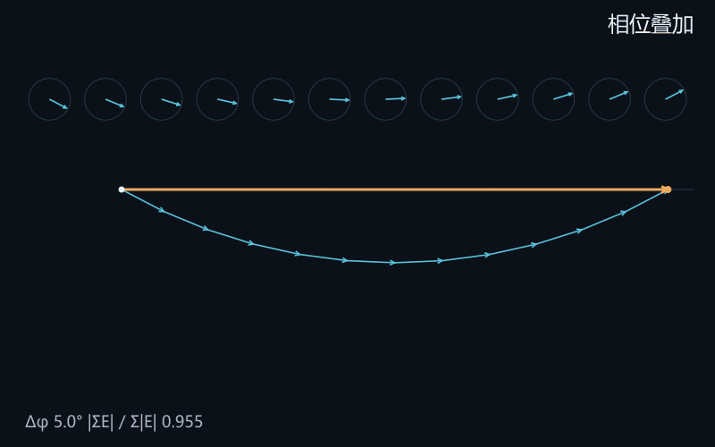
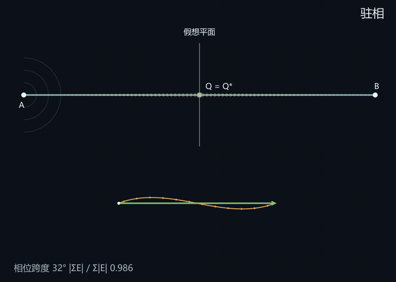
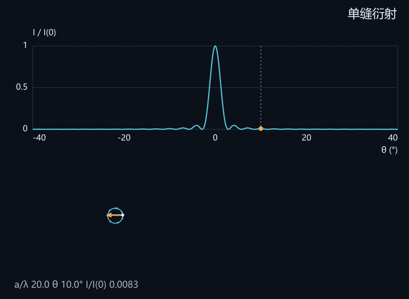

我们前面主要研究单个行波，它描述了某一方向上传播的理想简谐波，但真实环境中，波会遇到墙壁、介质界面、障碍物，还会从多个方向传播过来，因此我们需要把复杂波的传播拆解成许多简单的传播过程，这就是惠更斯原理。我们需要研究波在时间这个维度上的操作规律，我们观察到的现象是波会保持自己的形状，但为什么不是变成无数杂乱的小波，惠更斯提出了一种非常巧妙的几何解释，波阵面上的每一点，都可以看作一个发出次波的波源，经过一段时间，这些次波形成的包络面就是新的波阵面。在均匀介质中，平面波的波面保持平面，因此波面的法线沿直线传播那在不同介质中，波速是不一样的，这就导致了波面法线的旋转，因此就导致了折射在线性介质中，多个波就是相加的关系，自然叠加后也是一个波叠加后的效果我们主要看相位差和振幅，振幅就是矢量求和，在观察点的相位差就是因此如果两个波源同相，且在同一种介质中传播，那么只需要研究波程差通过波程差，就可以找干涉加强的条件和干涉减弱最强的条件
再从能量角度来看，相消干涉时，能量去哪里了？这里其实我们自觉地将振幅和能量产生上了联系，其实这个要整体来看，干涉相当于将能量重新分配，相长的就是两倍能量，干涉相消的部分就是0，这两部分在一个连续介质中一般是成对出现的空间部分与时间部分分离，所以有些地方永远不动，有些地方振动最剧烈，把特殊的点单独拿出来命个名，就叫波节与波腹我们研究波，是因为这个还是很有用的，比方说用XRD来检测晶体内部的结构，就是利用当X射线照射晶体时，原子中的电子会散射入射的X射线，不同原子散射出的电磁波叠加，产生相长干涉，就会形成衍射峰，当晶面间距改变，就可能导致衍射峰位置改变，从而可以预测晶体的结构同样的，我们也可以逆向设计波场，就比如我们希望一束光经过某种材料后自动聚焦成指定图案，或者希望超声能量集中在材料内部某个很小的区域，这时候就需要处理大量的微结构来控制相位分布这里还有个问题就是为什么光是沿直线传播，我们从波的角度来推导出几何光学的根基首先要明确一点，就是由惠更斯原理，光沿直线传播是指在均匀介质中，每个方向上的波阵面都沿自己的法线向前推进。当然这并没有解释清楚，还是会有点隐隐不安，觉得不够具有说服力更完整的波动理论不仅考虑次波传播到哪里，还考虑它们到达时的相位，在计算某一点的波场时，需要把许多传播贡献按照相位相加，
由于各处次波会发生相干叠加，在波长远小于传播环境特征尺寸时，偏离几何光线路径的贡献通常因相位快速变化而相互抵消，而光线路径附近的相位变化较慢，贡献能够有效叠加，这就是驻相原理。
当然如果衍射显著或介质不均匀时，光就不一定表现为直线传播。
就是有机物的命名其实还是挺难的，我们需要找到一个方法，将所有结构命名且不重复，不会引起争议，而且是在三维中的，这就不得不涉及图论了，我们将有机化合物抽象成点线的结合，那么原子是顶点（顶点不同，顶点的类型也是一个维度），化学键是边。单键、双键、三键是不同类型的边（这里更复杂，边的类型还需要考虑），原子的空间排列是附加的立体化学信息。综合考虑还需要细想一下感觉很难用大一统的理论方法解决命名和反应问题，而且现在学界也是有很多不同的规则，嗯，还是看需求灵活变通吧